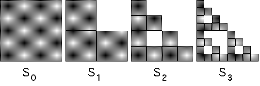

Consider the transformations
These generate a right isosceles Sierpinski gasket.
Start with the unit square S0. Then
and so on. Here are S0 through S3, arranged side-by-side.
|  |
To make precise the sense in which Sn converge, we compute the Hausdorff distances
| First, h(SO,S1) = 1/2 |
| Next, h(S1,S2) = 1/4 |
| Then, h(S2,S3) = 1/8 |
| In general, h(Sn-1,Sn) = 1/2n |
Return to Convergence of determinisitc IFS.